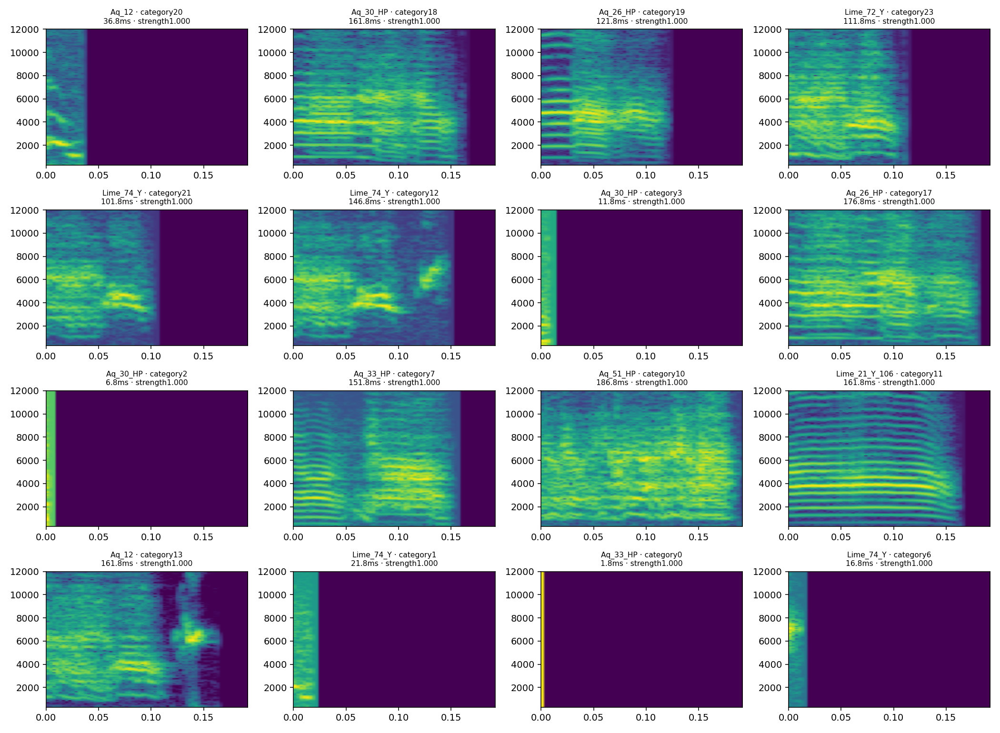

Primary analysis: shared partitions within each tutor family
Each embedding and partition combines one tutor and all eligible pupils. Categories are shared within that family only. Technically valid source intervals are retained without historical duration cutoffs. cuML results are exploratory; CPU equivalence and biological validation are not claimed.
Checks for published updates every minute. New validated snapshots are published about every ten minutes.
Shared-partition tutor–pupil summary
Per-bird entropy
Hopkins
Monte Carlo spread is descriptive, not a confidence interval. Count-balanced sampling is not recording-balanced. Smaller Hopkins values indicate more clusterable structure.
All family execution states
Pair-conditioned acoustic occupancy diversity
Categories are jointly fitted within each pair. Category identities are not assumed homologous across pairs. Entropy contrasts are descriptive and depend on representation, resolution, sampling, and noise treatment. These results do not establish copying accuracy, developmental change, significance, or causal learning effects.
Loading registry…
Complete family and tutor-group coverage
Catalogued tutor–pupil relationships and candidate rearing-parent groups are separate evidence tiers. Exposure is not independently verified unless stated. Held, unresolved, unsupported, failed and uncomputed pairs remain visible.
| Group / tutor | Evidence tier | Pairs | Completed arms | Pair statuses |
|---|
Definitions and interpretation
Whole-syllable duration remains part of the original spectrogram representation. Pair-specific padding supplies the longest retained interval and does not establish a shared metric across families. Original and joint unwhitened PCA75 analyses use identical observations. Analysis dimensions are distinct from any two-dimensional display. Equal density thresholds do not guarantee equal resolution across representations.
Noise-inclusive entropy treats noise as one category and uses all observations. Assigned-only entropy uses assigned observations; all-noise entropy is unavailable. A single occupied category has zero bits and one effective category; occupied-category evenness is undefined there. Entropy in bits and effective categories (2^H) are primary. Legacy H/log₂N depends on sample size. Unequal observation counts do not imply equal repertoire coverage. Membership strength is distinct from cluster persistence.
Matched-observation ARI is label-invariant agreement, not biological validation. Fixed-partition sampling diagnostics, when provided, are conditional on the fitted partition and do not include uncertainty from embedding or clustering refits. Shared tutors and overlapping bird roles prevent treating pair contrasts as independent biological replicates.
Download safe analysis summary · Registry · Queue/status inventory · Results · Bundle provenance
Historical published analyses
The existing products below retain their original cohorts and partition scopes. They are not relabelled as new pair-conditioned analyses.
Full-data results · October 2026
31,061 observations · Aq12 and DG1 · four density settings. Whole-syllable spectrogram structure, including duration, remains the reference. The23 reviewed exclusions and Aq32 hold are preserved.
| Setting | Clusters | Noise n (%) | Entropy including noise | Assigned entropy | Fit seconds | Sampled host/GPU peak GiB |
|---|---|---|---|---|---|---|
| mcs64_ms20 | 24 | 504 (1.62%) | 2.737 | 2.661 | 20.25 | 2.90 / 1.19 |
| mcs32_ms20 | 26 | 480 (1.55%) | 2.749 | 2.676 | 16.82 | 2.82 / 1.19 |
| mcs128_ms20 | 21 | 469 (1.51%) | 2.681 | 2.608 | 17.03 | 2.82 / 1.19 |
| mcs64_ms40 | 46 | 7919 (25.49%) | 4.527 | 4.977 | 22.23 | 2.95 / 1.20 |
The three min_samples20 settings largely agree. The min_samples40 sensitivity changes the partition substantially; no setting is selected for a favorable entropy direction. These are cuML descriptive results without CPU-equivalence or biological-validation claims.
Clustering agreement, per-bird entropy and duration/support diagnostics
| Pair | ARI including noise | ARI common assigned | Common assigned n | Noise-transition fraction |
|---|---|---|---|---|
| mcs64_ms20__mcs32_ms20 | 0.9998 | 0.9999 | 30547 | 0.0014 |
| mcs64_ms20__mcs128_ms20 | 0.9984 | 0.9986 | 30557 | 0.0011 |
| mcs64_ms20__mcs64_ms40 | 0.2344 | 0.1978 | 23065 | 0.2437 |
| mcs32_ms20__mcs128_ms20 | 0.9981 | 0.9984 | 30547 | 0.0025 |
| mcs32_ms20__mcs64_ms40 | 0.2341 | 0.1972 | 23056 | 0.2450 |
| mcs128_ms20__mcs64_ms40 | 0.2374 | 0.2062 | 23097 | 0.2427 |
| Bird | n | Noise n | Assigned categories | H including noise | Assigned H |
|---|---|---|---|---|---|
| Aq_12 | 630 | 45 | 6 | 1.336 | 1.039 |
| Aq_26_HP | 2211 | 42 | 7 | 1.684 | 1.579 |
| Aq_30_HP | 1318 | 23 | 8 | 1.460 | 1.357 |
| Aq_31_HP | 1973 | 7 | 5 | 1.291 | 1.261 |
| Aq_33_HP | 2019 | 22 | 10 | 1.913 | 1.847 |
| Aq_51_HP | 4121 | 35 | 9 | 1.613 | 1.555 |
| DG_1 | 780 | 7 | 6 | 1.374 | 1.312 |
| Lime_21_Y_106 | 3196 | 25 | 9 | 1.972 | 1.921 |
| Lime_22_Y_107 | 104 | 33 | 1 | 0.901 | -0.000 |
| Lime_23_Y_108 | 447 | 76 | 3 | 0.992 | 0.403 |
| Lime_24_Y_109 | 972 | 25 | 2 | 0.234 | 0.063 |
| Lime_29 | 1090 | 78 | 6 | 1.831 | 1.572 |
| Lime_30 | 1268 | 58 | 6 | 1.671 | 1.470 |
| Lime_31_Y_641_06 | 1047 | 13 | 8 | 1.964 | 1.891 |
| Lime_72_Y | 5007 | 5 | 6 | 0.910 | 0.900 |
| Lime_74_Y | 4878 | 10 | 10 | 2.884 | 2.868 |
| Setting | Duration eta² | Support eta² | Noise below5ms | Noise above Aq12 cutoff |
|---|---|---|---|---|
| mcs64_ms20 | 0.923 | 0.923 | 0.30% | 3.82% |
| mcs32_ms20 | 0.921 | 0.922 | 0.30% | 3.82% |
| mcs128_ms20 | 0.924 | 0.924 | 0.30% | 2.68% |
| mcs64_ms40 | 0.911 | 0.911 | 0.30% | 7.83% |
Entropies are bits. Noise is one category in the first treatment; assigned-only entropy uses a smaller denominator. Counts are unequal, Lime22 is sparsely represented, duration selection differs between families, and333 unreviewed sub5ms intervals remain. No general family inference or significance test follows.
Explore the full cohort
Choose a projection and coloring below. All31,061 observations remain in each view. Category colors are the unchanged original-space cuML64/20 labels; clustering was not refitted in the2D coordinates.
Loading PCA…
Projection methods and interpretation
Shared Aq12–DG1 spaces, distinct from the earlier family-specific embeddings. PCA,UMAP and t-SNE use GPU cuML; cosine PCoA uses1,000-landmark CPU classical scaling/Gower interpolation; PHATE uses its existing CPU defaults including internal100-component PCA and2,000landmarks. Seed20261006. Nonlinear axes have no explained-variance meaning. Backend equivalence to August implementations is unclaimed.
Hopkins for the selected projection
Euclidean Hopkins in the displayed2D space, using each group’s convex-hull null,100 deterministic repeats and squared distances. Lower values describe greater concentration relative to this null;0.5 is the randomness reference. Repeat quantiles describe Monte Carlo variation, not biological confidence intervals. Nonlinear embeddings can create concentration: this does not test original-space acoustic clusterability. Groups restrict a shared embedding; these are not pair-conditioned refits.
| Group | Observations | Sample per repeat | Mean H | Repeat SD | Repeat 2.5–97.5% |
|---|
Reference spectrogram examples
Maximum-membership examples from the16largest reference categories, selected deterministically with canonical-ID tie breaking. Membership strength is distinct from cluster persistence. Short intervals remain unclassified unless manually reviewed.

Earlier analyses · August 2026
Interactive visualizations
Choose an analysis space. Each page contains eight interactive embeddings, HDBSCAN cluster views, representative spectrogram callouts, and Hopkins results.
1. Objective
The analysis was redesigned to retain syllable time structure. Instead of averaging each syllable through time and clustering a time-collapsed power spectrum, every syllable was represented by an onset-aligned spectrogram and silence-padded on the right to a family-specific duration. Separate family spaces preserve within-family comparability without forcing all families to share the same duration distribution or cluster frequencies.
The completed workflow provides:
- family-specific duration diagnostics and automatic percentile exclusions;
- onset-aligned, right-padded spectrotemporal vectors;
- Euclidean PCA and cosine PCoA/MDS;
- Euclidean and cosine UMAP, t-SNE, and PHATE;
- HDBSCAN clustering without a fixed number of clusters;
- per-individual Hopkins clusterability estimates in Euclidean and cosine UMAP space;
- static projections surrounded by representative syllable spectrograms;
- interactive browser visualizations and public GitHub Pages deployment.
2. Analysis spaces
Three spaces were analyzed independently.
| Space | Individuals | Input syllables |
|---|---|---|
| Aq12 family | Aq_12, Lime_21_Y_106, Lime_22_Y_107, Lime_23_Y_108, Lime_24_Y_109, Lime_31_Y_641_06, Lime_72_Y, Lime_74_Y | 17,898 |
| DG1 family | DG_1, Lime_30, Aq_31_HP, Aq_32_HP, Aq_30_HP, Aq_51_HP, Aq_26_HP, Lime_29, Aq_33_HP | 18,804 |
| Aq1 | Aq1 only | 970 |
The stable identifier was syllable_id; bird, recording, date, vocalization,
onset, offset, duration, and source provenance were retained in internal row
manifests.
3. Duration diagnostics and exclusions
Histogram/CDF figures were generated before selecting thresholds. They mark the P80, P85, P90, and P95 pooled duration percentiles and include exact impact tables by bird.
Final policy:
| Space | Threshold | Duration | Selected | Duration exclusions | Manual exclusions |
|---|---|---|---|---|---|
| Aq12 family | P90 | 0.166780 s | 16,304 | 1,593 | 1 |
| DG1 family | P85 | 0.191780 s | 16,129 | 2,675 | 0 |
| Aq1 | P85 | 0.386757 s | 827 | 143 | 0 |
A tolerance of 1e-9 s was used when comparing durations with percentile
thresholds. This prevents sample-quantized durations that are biologically tied
at the cutoff from being split by floating-point noise.
The sole manual exclusion was
AQ12_43327.42135876_8_15_11_42_15_seg0007, canonical family identifier
Aq_12::2018-08-15::AQ12_43327.42135876_8_15_11_42_15::7, because manual
review showed that it contains multiple elements. All other reviewed long
syllables were retained or excluded only according to the final percentile
rule.
Selected rows by individual:
| Aq12 family | n | DG1 family | n |
|---|---|---|---|
| Aq_12 | 633 | DG_1 | 780 |
| Lime_21_Y_106 | 3,208 | Lime_30 | 1,268 |
| Lime_22_Y_107 | 104 | Aq_31_HP | 1,973 |
| Lime_23_Y_108 | 448 | Aq_32_HP | 1,349 |
| Lime_24_Y_109 | 973 | Aq_30_HP | 1,318 |
| Lime_31_Y_641_06 | 1,050 | Aq_51_HP | 4,121 |
| Lime_72_Y | 5,007 | Aq_26_HP | 2,211 |
| Lime_74_Y | 4,881 | Lime_29 | 1,090 |
| Aq_33_HP | 2,019 |
4. Padded spectrotemporal representation
Every selected WAV interval was cut using half-open sample boundaries, resampled to 44.1 kHz when necessary, aligned with syllable onset at sample zero, and padded with silence on the right. No time averaging was applied.
Spectrogram settings:
- Hann window;
- FFT size: 512 samples;
- hop length: 128 samples;
- frequency range: 300–12,000 Hz;
- 136 frequency bins;
- per-syllable peak-relative log power;
- values clipped to
[-80, 0] dBand mapped linearly to[0, 1]; - padded silent frames forced to zero;
- stored as mmap-compatible
float32NumPy arrays.
| Space | Tensor shape (syllable × frequency × time) | Flattened dimensions |
|---|---|---|
| Aq12 family | 16,304 × 136 × 55 | 16,304 × 7,480 |
| DG1 family | 16,129 × 136 × 64 | 16,129 × 8,704 |
| Aq1 | 827 × 136 × 131 | 827 × 17,816 |
5. Embeddings
Eight two-dimensional variants were generated in every space with random seed 42:
- PCA — Euclidean;
- PCoA/MDS — cosine;
- UMAP — Euclidean;
- UMAP — cosine;
- t-SNE — Euclidean;
- t-SNE — cosine;
- PHATE — Euclidean;
- PHATE — cosine.
The cosine linear counterpart is explicitly labelled PCoA/MDS rather than “cosine PCA.” Full PCoA would require an infeasible all-pairs distance matrix for the family datasets, so cosine PCoA used deterministic landmark classical scaling with up to 1,000 landmarks and Gower out-of-sample interpolation.
PCA variance:
| Space | PC1 | PC2 | PC1 + PC2 |
|---|---|---|---|
| Aq12 family | 48.598% | 21.784% | 70.382% |
| DG1 family | 65.497% | 10.566% | 76.064% |
| Aq1 | 59.309% | 13.932% | 73.241% |
These percentages are written in PCA titles and axis labels. Nonlinear axes do not have an explained-variance interpretation.
6. HDBSCAN clustering
HDBSCAN was applied separately to each two-dimensional embedding, so cluster number and shape were inferred rather than fixed. The primary minimum cluster size was approximately 1% of the analysis-space sample count: 164 for Aq12, 162 for DG1, and 9 for Aq1. Sensitivity fits at 0.5%, 1%, and 2% were saved.
Primary results:
| Space | Variant | Clusters | Noise |
|---|---|---|---|
| Aq12 | PCA Euclidean | 12 | 21.8% |
| Aq12 | PCoA cosine | 16 | 29.1% |
| Aq12 | UMAP Euclidean | 34 | 8.8% |
| Aq12 | UMAP cosine | 35 | 11.5% |
| Aq12 | t-SNE Euclidean | 29 | 20.0% |
| Aq12 | t-SNE cosine | 31 | 23.5% |
| Aq12 | PHATE Euclidean | 24 | 19.0% |
| Aq12 | PHATE cosine | 28 | 19.9% |
| DG1 | PCA Euclidean | 8 | 16.4% |
| DG1 | PCoA cosine | 10 | 21.6% |
| DG1 | UMAP Euclidean | 24 | 5.6% |
| DG1 | UMAP cosine | 26 | 3.7% |
| DG1 | t-SNE Euclidean | 26 | 20.2% |
| DG1 | t-SNE cosine | 27 | 23.4% |
| DG1 | PHATE Euclidean | 20 | 10.9% |
| DG1 | PHATE cosine | 22 | 12.7% |
| Aq1 | PCA Euclidean | 9 | 11.1% |
| Aq1 | PCoA cosine | 12 | 15.0% |
| Aq1 | UMAP Euclidean | 17 | 1.1% |
| Aq1 | UMAP cosine | 18 | 1.8% |
| Aq1 | t-SNE Euclidean | 15 | 1.9% |
| Aq1 | t-SNE cosine | 14 | 0.7% |
| Aq1 | PHATE Euclidean | 11 | 1.0% |
| Aq1 | PHATE cosine | 14 | 4.6% |
These cluster counts are method-dependent descriptions of two-dimensional geometry, not a single definitive biological syllable-type count.
7. Hopkins clusterability
The requested statistic is the Hopkins statistic. It was calculated for each individual bird in Euclidean UMAP and cosine UMAP space, using 100 seeded repetitions. Synthetic observations were sampled uniformly by area inside the observed two-dimensional convex hull. Distances were raised to the embedding dimensionality before summation.
The reported orientation follows the requested convention from Sainburg et al. (2020):
- values near 0 indicate stronger clusterability;
- values near 0.5 indicate spatial randomness.
Results are shown on a logarithmic horizontal axis with repeated-estimate uncertainty intervals and an explicit 0.5 randomness reference. Mean values ranged from 0.000362 to 0.058379 in the Aq12 family, 0.000608 to 0.022398 in the DG1 family, and were 0.000192 (Euclidean) and 0.000200 (cosine) for Aq1. All means are below 0.5, although uncertainty is wide for some small individual subsets, especially Lime_22_Y_107 Euclidean UMAP.
Exact means, repeated values, and intervals are retained in each space's
hopkins_summary.csv and hopkins_repeated.json.
8. Visualizations
Every embedding has:
- a static PNG colored by primary HDBSCAN cluster;
- representative syllable spectrograms arranged around the plot perimeter;
- dashed connectors pointing to each representative syllable's coordinate;
- a deterministic representative-syllable CSV;
- an interactive Plotly page with pan, zoom, cluster legend, and hover metadata;
- a full internal embedding row table.
The callout layout was corrected so titles and axis labels do not overlap the spectrogram frame. Black regions to the right of syllables are the intended silence padding, not missing image data.
11. Interpretation cautions
- The three analysis spaces are deliberately separate. Coordinates and cluster labels must not be compared numerically across spaces.
- HDBSCAN was fitted to each two-dimensional visualization. Its clusters can change with embedding method and metric; sensitivity outputs should be examined before assigning biological types.
- Hopkins was computed in UMAP space, as requested, and therefore measures clusterability of that embedded geometry rather than the original full spectrogram space.
- UMAP, t-SNE, and PHATE emphasize local neighborhoods differently. Global distances and apparent island separation are not interchangeable between methods.
- PHATE reported three disconnected components for one family graph. This may represent distinct structure, but distances between disconnected components should be interpreted cautiously.
- Family-level percentile thresholds yield unequal retained counts across individuals. This is scientifically transparent in the exported count tables and should be considered when comparing cluster occupancy.
- Padded silence is part of the representation. Duration-related structure may therefore contribute to clustering alongside internal spectrotemporal shape.